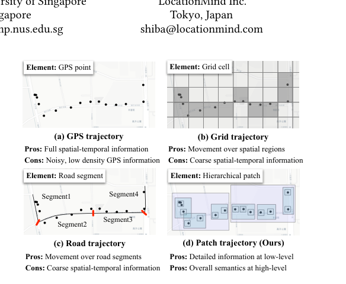
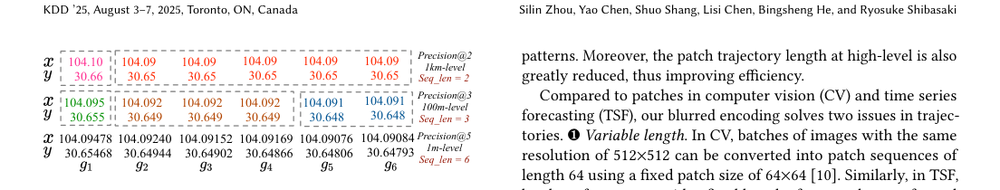
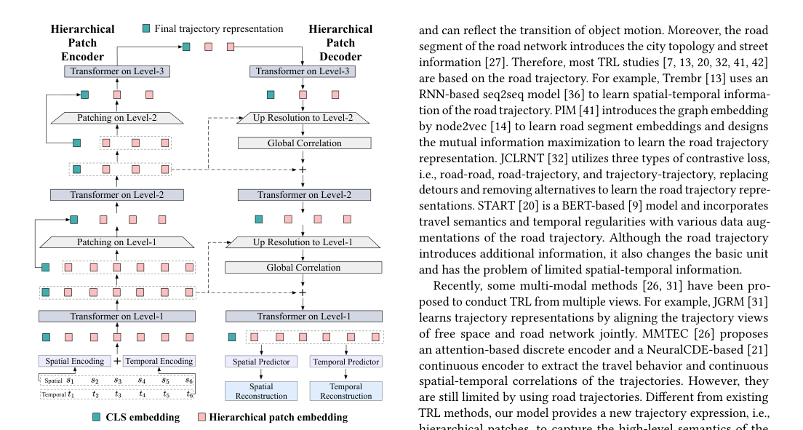
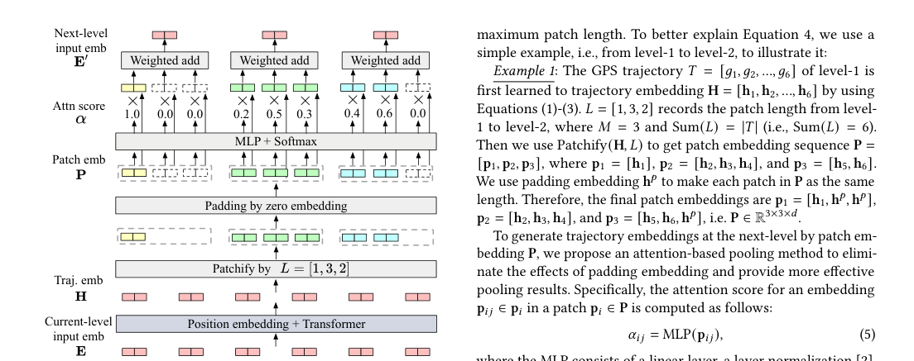

Blurred Encoding for Trajectory Representation Learning（BLUE）¶
📄 论文链接：arXiv:2511.13741 | GitHub 代码
核心要点¶
- BLUE 提出了一种新的轨迹表达方式：层次化 patch 轨迹，通过逐步降低 GPS 坐标精度，同时保留细节和语义
- 模型是金字塔结构的 encoder-decoder，每层用 Transformer 学习不同精度层次的表示
- 训练方式：自监督重建，用 MSE 同时还原 GPS 点的坐标和时间
- 默认配置下模型仅 3.51M 参数，输出 128 维轨迹向量
- 在 Porto 和 Chengdu 数据集的三个下游任务上优于 8 个 SOTA 方法
1. 背景与动机¶
传统轨迹表示学习主要有两类方法：
| 方法 | 做法 | 缺点 |
|---|---|---|
| Grid-based | GPS 点映射到网格单元 | 丢失网格内细粒度信息 |
| Road-based | GPS 点匹配到路网路段 | 依赖地图匹配，跨城市泛化差 |
BLUE 想解决的问题：同时保留轨迹的低级空间-时间细节和高级出行语义，并且跨城市通用。
2. Blurred Encoding 方法¶
核心思路：逐步截断 GPS 坐标的小数位，把轨迹变成多个精度层次的 patch。

Figure 1: GPS 轨迹、Grid 轨迹、Road 轨迹与 BLUE 的 Patch 轨迹对比三个层次：
- Level-1（高精度）：对应原始 GPS 点，保留细节
- Level-2（中精度）：相近点聚合成 patch，捕获局部模式
- Level-3（低精度）：patch 范围更大，捕获整体出行语义

Figure 3: 通过截断 GPS 精度生成层次化 patch 轨迹Patch Trajectory 生成过程¶
具体实现通过逐步四舍五入 GPS 坐标完成，核心逻辑在 preprocess.py 的 _get_multi_scale_traj 函数中：
- 把 GPS 坐标四舍五入到指定精度
- 找出相邻点坐标变化的位置
- 根据变化位置划分 patch
- 记录每个 patch 包含几个原始点
- 提取每个 patch 的代表点（第一个点）
例子：
假设 level-1 有 6 个原始 GPS 点：
| 点 | 经度 | 纬度 |
|---|---|---|
| g1 | 104.09478 | 30.65468 |
| g2 | 104.09240 | 30.64944 |
| g3 | 104.09152 | 30.64902 |
| g4 | 104.09169 | 30.64866 |
| g5 | 104.09076 | 30.64806 |
| g6 | 104.09084 | 30.64793 |
四舍五入到 3 位小数后，g2/g3/g4 相同，g5/g6 相同：
- patch p1 = {g1}，长度 1
- patch p2 = {g2, g3, g4}，长度 3
- patch p3 = {g5, g6}，长度 2
再把结果四舍五入到 2 位小数，所有点都相同：
- patch p1 = {p1, p2, p3}，长度 3
三个层次关系：
| 层次 | 精度 | patch 特点 |
|---|---|---|
| s5（level-1） | 原始 GPS 精度 | 点最多，细节最丰富 |
| s3（level-2） | 3 位小数 | patch 较少，捕获局部模式 |
| s2（level-3） | 2 位小数 | patch 最少，捕获整体语义 |
关键点：
- 不是固定窗口切分，patch 边界由坐标精度决定
- 每个 patch 长度可变
patch_lens记录了 patch 与原始点的对应关系，便于 decoder 重建
3. 模型架构¶
BLUE 是一个金字塔结构的 encoder-decoder：
- Encoder：从 level-1 逐步压缩到 level-3
- Decoder：从 level-3 逐步恢复到 level-1
- 每层使用 Transformer
- 层次之间用 attention-based pooling 聚合 patch 信息

Figure 2: BLUE 的金字塔 encoder-decoder 结构
Figure 4: 从 level-1 到 level-2 的 patch encoder 流程Attention-based Pooling¶
层次之间用 attention-based pooling 把多个点聚合成一个 patch 表示。
具体做法：
- 对 patch 内每个点的嵌入 \(p_{ij}\)，用 MLP 计算一个注意力分数：
$\(\alpha_{ij} = \text{MLP}(p_{ij})\)$
- 在 patch 内做 softmax 归一化：
$\(\alpha'_{ij} = \frac{e^{\alpha_{ij}}}{\sum_{k=1}^{M} e^{\alpha_{ik}}}\)$
- 加权求和得到 patch 表示：
$\(e'_i = \sum_{j=1}^{M} \alpha'_{ij} \cdot p_{ij}\)$
直观例子：
假设 level-2 的一个 patch 包含 3 个点，模型学出的权重分别是 0.2、0.5、0.3，则：
这意味着模型认为中间那个点对 patch 语义的贡献最大。
相比 mean/max pooling：
| 方法 | 特点 |
|---|---|
| Mean pooling | 所有点同等对待，容易模糊关键信息 |
| Max pooling | 只保留最强信号，会丢失其余信息 |
| Attention-based pooling | 自动学习每个点的重要性，既保留关键信息，又不完全丢弃其他信息 |
在 BLUE 中，patch 长度是可变的，attention-based pooling 能自适应处理不同长度的 patch，避免简单切分破坏轨迹语义。
输入嵌入¶
每个 GPS 点包含空间和时间信息：
- Spatial Embedding：利用相邻点的距离和方位角
- Temporal Embedding：利用时间戳的周期特征（小时、星期等）
训练目标¶
自监督重建：用 MSE 同时还原每个 GPS 点的坐标和时间戳。
最终轨迹表示取最高层的 [CLS] token。
4. 实验结果¶
数据集：
| 数据集 | 轨迹数 | 区域 |
|---|---|---|
| Porto | 113 万+ | 78.3 km² |
| Chengdu | 111 万+ | 708.6 km² |
下游任务：
- 行程时间估计
- 最相似轨迹搜索
- 轨迹分类
BLUE 在三个任务上均优于对比方法，且跨城市迁移能力更强。
5. 与当前项目的关系¶
在当前项目中，BLUE 作为冻结的 GPS 轨迹编码器使用：
- 输入：原始 GPS 轨迹
- 输出：同时输出三种 latent，供不同下游组件使用
- 作用：把轨迹转换成 LLM 可理解的 dense latent
| latent | 维度 | 用途 |
|---|---|---|
cls_latent |
(B, 128) | 全局聚合表示，输入 AD Head 做异常检测 |
pooled_latent |
(B, 128) | 池化后的轨迹表示，结合 25 维运动学特征输入 TMI/TTE Head |
latent_seq |
(B, L, 128) | 完整序列表示，输入 TrajectoryConnector，压缩成 N 个 latent token 后送入 LLM |
注意：论文原始 BLUE 全网络仅 3.51M 参数，但项目文档写约 85M，两者不一致，可能是项目使用了扩展版本。
6. 一句话总结¶
BLUE 通过"逐步模糊 GPS 坐标"的方式把轨迹表示成多层次 patch，再用金字塔 encoder-decoder 做自监督重建，从而同时学习轨迹的细粒度细节和整体语义。